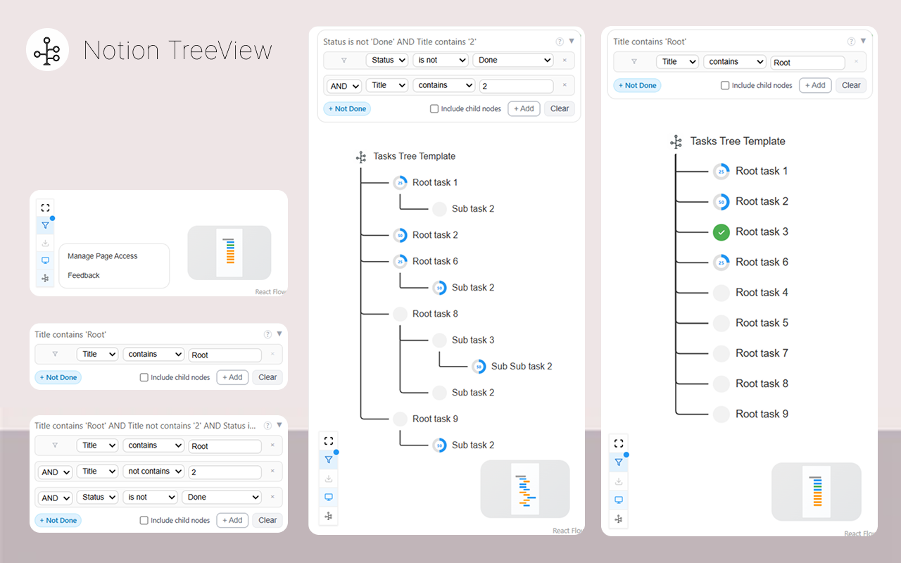
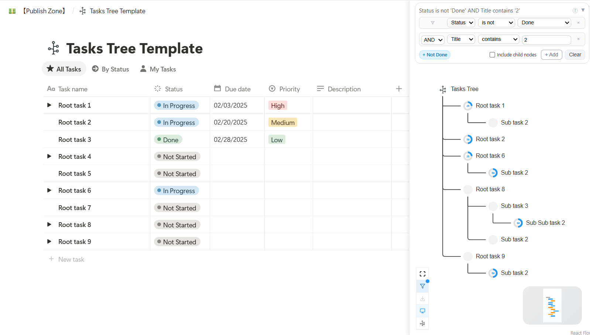

TreeNode
Notion数据库可视化Chrome扩展，将平面条目转换为直观的树状结构
活跃用户
100+
用户评分
4.8/5
下载量
120+
PH Daily Rank
#9


项目概述
TreeView是一个专为Notion Database设计的Chrome扩展，解决了Database在展示层次化数据时的局限。
通过将平面的数据库条目转换为直观的树状结构，提升项目管理和任务组织的效率。
技术架构
核心功能
🌳 智能树状转换
⚡ 实时同步
📱 响应式设计
🔍 快速搜索
问题与解决方案
🎯 核心问题
- 项目管理时缺乏整体视图和进度跟踪
- 多层级任务依赖关系不够清晰
💡 解决方案
- 参考linux tree命令，平铺展示数据库条目
- 自动识别Notion数据库中的层次关系，实时生成树状视图
产品思考
- 把自己作为用户，创造自己想用的产品
- 从最小可行产品开始，快速验证核心假设
- 宣传和交付一样重要
- 建立用户反馈收集机制